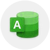
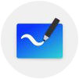
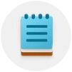
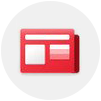
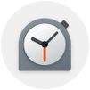

| Icono | APP | Descripción |
|---|---|---|
|  | Minidatos | Con esta app, los usuarios pueden crear y personalizar tablas para registrar y almacenar datos, como clientes, productos, proyectos o cualquier otro tipo de información relevante de manera rápida y sencilla, creando pequeñas bases de datos que puedes consultar en cualquier momento tanto desde el PC como desde el móvil, ya que tiene tnato versión móvil, como de escritorio que se sincronizan continaumente. |
|  | Dibuendo | Dibuendo es es una herramienta de creación de imágenes que permite a los usuarios dibujar, pintar y editar imágenes en una tablet. Esta aplicación suele incluir una amplia gama de herramientas de dibujo, como pinceles, lápices, gomas de borrar, y otras herramientas de edición de imágenes |
|  | Apuntómetro | Con esta aplicación, los usuarios pueden crear notas de texto, agregar imágenes y archivos adjuntos, y organizarlas mediante etiquetas y categorías. Además, también ofrece características avanzadas, como recordatorios, sincronización en la nube y compatibilidad con otros servicios, como calendarios y listas de tareas |
|  | Noticeame | Con una interfaz intuitiva y fácil de usar, Noticeame permite a los usuarios navegar y leer noticias de diversas categorías, incluyendo política, tecnología, entretenimiento y deportes, entre otros. La app utiliza un sistema avanzado de recomendación para sugerir noticias personalizadas para cada usuario en función de sus intereses y preferencias. |
|  | Lalarma | Lalarma permite a los usuarios establecer alarmas precisas para recordarles sus citas, tareas y otros compromisos importantes. Además, la app cuenta con un cronómetro preciso y un temporizador que pueden ser útiles para realizar ejercicios, cocinar o llevar un registro del tiempo que se dedica a una tarea específica. Otras características incluyen la opción de configurar recordatorios repetitivos, como un recordatorio diario para tomar medicamentos, y la posibilidad de crear una lista de tareas pendientes para organizar sus responsabilidades. |
|  | Solsolecito | Solsolecito es una herramienta avanzada y fácil de usar que brinda a los usuarios información precisa y actualizada sobre las condiciones climáticas en su ubicación y en todo el mundo. Además, esta app incluye una característica única que avisa a los usuarios cuando el día es soleado. Con esta funcionalidad, los usuarios pueden aprovechar al máximo el buen tiempo y programar sus actividades al aire libre, como caminatas, picnic o juegos deportivos. |
Podrás encontrar muchas más aplicaciones en la App Store y en la Google Play Store